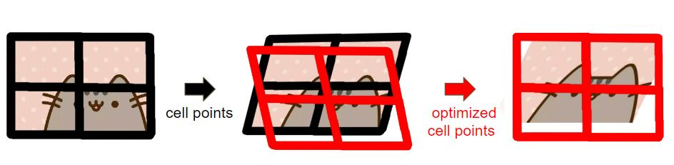

INTRODUCTION
A video captured with a hand-held device (e.g., a cell-phone or a portable camcorder) often appears remarkably shaky and undi-rected. Digital videostabilization improves the video quality by re-moving unwanted camera motion. We implement a video stabilization method [Liu et al. 2013] which models cam-era motion with a bundle of (multiple) camera paths. The model is based on a mesh-based, spatially-variant motion representation and an adaptive, space-time path optimization. Also, the motion representation allows users to fundamentally handle parallax and rolling shutter effects while it does not require long feature trajectories or sparse 3D reconstruction. Furthermore, we speed up this method by parallelizing some parts with CUDA support.
A Single Global Path

Bundled Paths

ALGORITHM
Overall Pipeline
-
Camera Path Computation
-
Feature detection & descriptor: SURF
-
Model estimation:Solve a sparse linear system
-
Robust Estimation:Outlier rejection using RANSAC
-
Path Optimization
-
Jacobi-based iterative solver: for about 20 iterations
-
Result Synthesis
Model Estimation
-
Data term
$$E_d(\hat{V}) = \sum_p \left\lVert\hat{V}_p w_p - \hat{p}\right\rVert^2$$
The feature p can be represented by a 2D bilinear interpolation of the four vertices \(V_p\) of the enclosing grid cell \(p = V_p w_p\) , where \(w_p\) are interpolation weight. We expect that the corresponding feature \(\hat{p}\) can be represented by the same weights of the warped grid vertices \(\hat{V}_p\) . We decide to get p by using optical flow in opencv.
Speed comparison
| (opencv) cuda feature detect + brute force matching |
(opencv) feature tracking |
| 61ms/frame |
17ms/frame |
-
Shape-preserving term
$$E_s(\hat{V}) = \sum_\hat{v} \left\lVert\hat{v} - \hat{v}_1 -sR_{90}(\hat{v}_0 - \hat{v}_1)\right\rVert, R_{90} =
\begin{bmatrix}0 & 1\\-1 & 0\end{bmatrix},$$
where \(s = \left\lVert v - v_1\right\rVert / \left\lVert v_0 - v_1\right\rVert\) is a known scalar computed form the initial mesh.
-
Final energy
$$E(\hat{V}) = E_d(\hat{V}) + \alpha E_s(\hat{V}), $$
where \(\alpha\) is an important weight to control the amount of regularization and we set \(\alpha = 3\). The bigger \(\alpha\) we choose, the more rectangular the grid is. The above method is called ASAP(as similar as possible). Since the final energy is quadratic, the warped mesh \(\hat{V}\) can be solved by a sparse linear system solver. To solve the system, we have tried solve function in opencv, and the speed is very slow. Another method we have tried is cusolver, and the precision is bad. Finally, we choose Newton's method:$$V_1 = V_0 - \gamma\nabla E(V_0)$$ to iteratively upadte \(V\) until final \(\hat{V}\) .
Speed comparison
| (solve) LU decomposition |
(solve) QR decomposition |
Newton's method |
| 320ms |
50ms |
0.156ms |
-
Estimating homographies
$$\hat{V}_i = F_i(t) V_i,$$
where \(V_i\) and \(\hat{V}_i\) are the four vertices before and after the warping. Thus, local homography \(F_i(t)\) in the grid cell i of frame t can be estimated. To facilitate the warping estimation, we use global homography \(\bar{F}(t)\) , which is computed by findHomography in opencv, to bring matching features closer.
Robust Estimation
We use RANSAC to reject outlier features, but we do not implement adaptive regulariztion mentioned in the paper.
Bundled Camera Paths
If we use \(C_i(t) = F_i(t)F_i(t-1) \cdot\cdot\cdot F_i(0)\)(used in the reference paper) to repesent camera path, each grid cell will be discontinuess. Treating \(V_c\) as feature points, we can require:
$$V_c(t) = G_c(t) w_c,$$
where \(G_c\) is four vertices of new grid that covers \(V_c\) and \(w_c\) is the corresponding weight. By applying same \(w_c\) to previous frame, we can get \(V_c(t)\) position according to frame(0):
$$V_c(t-1) = G_c(t-1) w_c$$
Path Optimization
-
Optimizing a Single Path
While smooting the camera path, we need to consider multiple factors: removing jitters, avoiding excessive cropping, and minimizing geometrical distortions. Given an original path \(C = \{C(t)\}\) , we seek an optimized path \(P = \{P(t)\}\) by minimizing the following function:
$$O(\{P(t)\}) = \sum_t(\left\lVert P(t) - C(t)\right\rVert^2 + \lambda_t \sum_{r\in\Omega_t} w_{t,r} (C) \cdot \left\lVert P(t) - P(r) \right\rVert^2), $$
where \(\Omega_t\) are the neighborhood at frame t. The othor terms are:
-
data term \(\left\lVert P(t) - C(t)\right\rVert^2\) enforcing the new camera path to be close to the original one to reduce cropping and distortion;
-
smoothness term \(\left\lVert P(t) - P(r) \right\rVert^2\) stabilizing the path;
-
weight \(w_{t,r} (C)\) to preserve motion discontinuities under fast panning/rotation or scene transition;
-
parameter \(\lambda_t\) to balance the above two terms;
Our solution is updated by a Jacobi-based iteration:
$$P^{(\xi+1)} (t) = \frac{1}{\gamma} (C(t) + \mathop{\sum_{\gamma\in\Omega_t}}_{\gamma\neq t} 2\lambda_t w_{t,r} P^{(\xi)} (r)), $$
where \(\gamma = 1 + 2\lambda_t \sum_{\gamma\in\Omega_t, \gamma\neq t} w_{t,r}\)
-
Discontinuity-preserving
$$w_{t,r} = G_t(\left\lVert r - t \right\rVert) \cdot G_m(\left\lVert C(r) - C(t) \right\rVert)$$
We use \(G_t()\) to suppress high frquency jitters, while using \(G_m()\) to preserves the camera motion in low-frequency. In our implementation, we set \(\Omega_t\) to 60 neighboring frames.
-
Cropping and distortion control
\(\lambda_t\) is used to balance data term and smooth term. The bigger it is, the higher corpping ration is. \(\lambda_t\) is initialized to 5. For any frame that does not satisfy the user requirements (cropping ratio or distortion is smaller than a pre-defined threshold), we decrease its parameter \(\lambda_t\) by a step \(1/10\lambda_t\) and re-run the optimization. We not only decrease \(\lambda_t\) at specific frame, but also take average in the neighbor of specific frame to smooth in temporality.
-
Optimizing Bundled Paths
Our motion model generates a bundle of camera paths. If these paths are optimized independently, neighboring paths could be less consistent, which may generate distortion in the final rendered video. Hence, we do a space-time optimization of all paths by min-imizing the following objective function:
$$\sum_i O(\{P_i(t)\}) + \sum_t \sum_{j \in N(i)} \left\lVert P_i(t) - P_j(t) \right\rVert^2, $$
where \(N(i)\) includes eight neighbors of the grid cell i. The Jacobi-based iteration will become:
$$P^{(\xi+1)}_i (t) = \frac{1}{\gamma'} (C_i(t) + \mathop{\sum_{\gamma\in\Omega_t}}_{\gamma\neq t} 2\lambda_t w_{t,r} P^{(\xi)}_i (r) + \mathop{\sum_{j\in N(i)}}_{j\neq i} 2P^{(\xi)}_j (t))$$
where \( \gamma' = 2\lambda_t \sum_{r \in \Omega_t , r \neq t} w_{t,r} + 2N(i) - 1\) . We iterate 20 times to optimize camera paths.
Result Synthesis

First, we warp the original frame to C. Then, we calculate a smooth path P. Finally, we warp P to the final result. Following are two methods:
-
Blending in opencv
Using homography to warp each grid cell in original frame, then blend them into an image C. To warp image P to result frame, we apply the same method again. The bad thing is that there exists some seam in the result frame.
-
Calculate position after warping for each pixel with CUDA
Speed comparison
| (opencv) blending |
CUDA |
| 1320ms/frame |
16ms/frame |
DEMO
SPEED COMPARASION
Under 640 x 360 resolution can achieve 25.54 fps
Under 1280 x 720 resolution is 7 times faster than paper
|
paper |
ours |
| extracting features |
300ms |
33ms |
| estimating motion |
50ms |
0.1ms |
| rendering the final result |
30ms |
21ms |
| total time |
400ms |
57ms |
| fps |
2.5fps |
17.5fps |